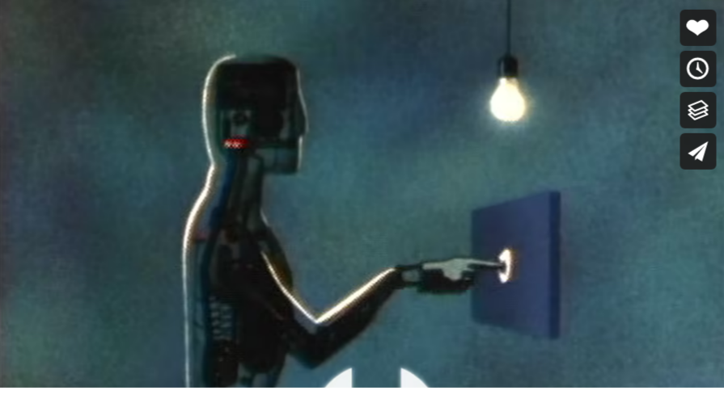

Learn Web
Web privacy
Data collection and privacy issues
Leave Ethical considerations aside to examine what can be technically collected and how to avoid it
Currently, it is believed that Google et al. collect
- device information
- IP address -> geolocation
- usage of Google services: YT, Gmail, Gmaps…
- which ads one clicks and their location on the page
- more identifying info. from partner services
all such data may be used for targeted/re-targeted ad placement and search relevancy
Data can be purchased by third-parties via
Third-party trackers
According to the EFF foundation:
“When you visit a webpage parts of the page may come from domains and servers other than the one you asked to visit
This is an essential feature of hypertext
On the modern Web, embedded images and code often use cookies and other methods to track your browsing habits — often to display advertisements
The domains that do this are called third party trackers“
Logical fallacies
Saying ‘I don’t have anything to hide’
customer profiling and tracking is never neutral and hardly positive
While it promises to customise advertisement so that it’s relevant to the user, the fact that such data exists is dangerous in itself and invites abuse
Alt. approach: use photos of AI-generated non-persons
End-to-end encryption
Becoming a standard today, it purports to eliminate eavesdropping and impersonation
In principle, it prevents potential eavesdroppers – including telecom providers, Internet providers, and even the provider of the communication service – from being able to access the cryptographic keys needed to decrypt the conversation
Encryption, cont’d
Seen as an extension of mail privacy rights, it does much more
It is based on notions of Number theory (requires finding the prime factors of large integers)
decryption takes practically forever
no exchange of secrets
Each participant will have a pair of keys: one public and one private not for sharing
Its development provides the basis of crypto-currencies
While probably based on a paranoid vision of liberal societies, E2E encryption helps in many instances
Incognito pages
browsers will allow navigation without saving any cookies or history
Only good to avoid parental/corporate control: today most web services track the IP number of the device
Containers
limit the ability of some site, eg Facebook, to track:
the like and follow buttons embedded elsewhere can create user tracking well beyond the visit to FB’s own page
FB might even track you visiting pages you don’t like nor share
It is unclear whether one can 100% avoid FB tracking
A recommended solution is multi-account containers
non-Chrome browser
Chrome is built around an excellent page rendering software
However, it basically tracks your navigation to see where you go when you jump out of site:
that is the only part of navigation that the server-side cannot see
Moreover, Chrome converts the action of typing a URL into searching a URL

Google releases (at least for now) the Chromium version of Chrome, which is lighter and less tracking

Use DuckDuckGo
non-Google search
Don’t log into Google services unless you have to (I have to)
Use the DuckDuckGo aggregator for your searches
DuckDuckGo collects search requests and passes them over to Google in batches
Academic research
A model of web navigation
The Potential Gain model rates the most central, (i.e., influential) pages when accounting for the ‘jumps’ in human web navigation
We say that a network N is navigable when an agent is able to efficiently reach any target node in N by means of local routing decisions
In a social network, navigability translates into the ability of reaching an individual through personal contacts
Potential gain, cont’d
Graph navigability is well-studied, but a fundamental question is still open:
why some people more likely than others to be reached via short, friend-of-a-friend, communication chains?
We propose a model of human navigation on networks that explains this phenomenon
Embedding PDFs
Three privacy tools
Privacy Badger
A browser extension, the Privacy Badger disables tracking cookies, supercookies etc.
Probably the best overall solution now available
“If an advertiser seems to be tracking you across multiple websites without your permission, Privacy Badger automatically blocks that advertiser from loading any more content in your browser. To the advertiser, it’s like you suddenly disappeared.”
Ad Observer
A brower extension: get it for Firefox
An academic project developed by the NYU Cybersecurity fo Democracy project
Currently focussed on US politics ads on FB
It collects and make public what information and what advertisements are served up by FB, Google etc. and to which audience.
under heavy legal fire from Meta etc.: the ultimate endorsement in terms of creating web privacy.
Ad nauseam
Another browser add-on
it fights profiling in a starkly different way:
instead of denying access to the clicks and likes,
it spoil the signal coming from our web activity to the maximum entropy (minimum information content).